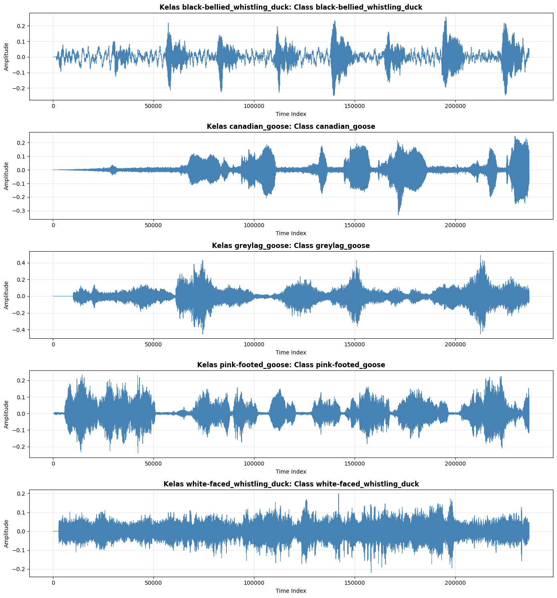

1. Data Understanding (Pemahaman Data)#
Tahap Data Understanding bertujuan untuk memahami karakteristik, struktur, dan pola yang ada dalam dataset DucksAndGeese sebelum dilakukan proses persiapan dan pemodelan data.
2.1 Karakteristik Dataset DucksAndGeese#
Dataset DucksAndGeese adalah dataset time series audio yang merepresentasikan sinyal suara lima spesies burung. Berikut adalah karakteristik utama dataset:
Sumber Data:
Berasal dari UEA Time Series Archive
Rekaman audio dari situs www.xenocanto.com
Kualitas rekaman: Kategori A (noise rendah) dan Kategori B (noise sedang)
Bentuk Data:
Format: univariate time series (satu channel/mono audio)
Panjang sinyal: 236.784 titik waktu (durasi ≈ 5,37 detik)
Sample rate: 44.100 Hz (sudah diseragamkan pada preprocessing awal)
Preprocessing awal: Semua sinyal sudah di-downsampling dan dipotong ke panjang terpendek
Karakteristik Kelas:
Jumlah kelas: 5 spesies burung
Total data: 100 rekaman (50 train, 50 test)
Distribusi kelas: Balanced (masing-masing 20 sampel)
Lima Spesies Burung:
Black-bellied Whistling Duck (Bebek bersiul) - Kategori Duck
Canadian Goose (Angsa Kanada) - Kategori Goose
Greylag Goose (Angsa abu-abu) - Kategori Goose
Pink-footed Goose (Angsa kaki merah) - Kategori Goose
White-faced Whistling Duck (Bebek bersiul bermuka putih) - Kategori Duck
2.2 Karakteristik Suara Burung#
Suara burung memiliki perbedaan karakteristik yang dapat dibedakan melalui analisis frekuensi dan temporal:
Kelompok |
Spesies |
Karakteristik Suara |
|---|---|---|
Duck (Whistling) |
Black-bellied, White-faced |
Nyaring, cepat, frekuensi tinggi |
Goose |
Canadian, Greylag, Pink-footed |
Berat, lambat, frekuensi rendah |
Tantangan Klasifikasi:
Overlap frekuensi antar spesies yang mirip
Noise lingkungan pada rekaman audio
Variasi kualitas rekaman (kategori A dan B)
Pola suara yang dapat berulang dengan durasi berbeda
2.3 Alasan Menggunakan Audio untuk Klasifikasi#
Identifikasi burung tidak selalu dapat dilakukan secara visual karena:
Burung sering tersembunyi di vegetasi
Aktif pada waktu-waktu tertentu (fajar, senja)
Sulit diamati langsung di lapangan
Identifikasi audio memungkinkan monitoring otomatis dan jarak jauh
2.4 Implikasi pada Pipeline Machine Learning#
Karakteristik dataset ini memiliki implikasi penting:
Dimensi data besar (236.784 titik waktu per sampel)
Memerlukan ekstraksi fitur untuk reduksi dimensi
Tidak efisien menggunakan sinyal mentah langsung ke model klasik
Dataset kecil (100 sampel total)
Model berbasis deep learning berisiko overfitting
Memerlukan teknik seperti augmentasi data atau feature-based approach
Model sederhana seperti Random Forest dan XGBoost lebih cocok
Data sudah balanced dan preprocessed
Tidak perlu handling imbalance atau cleaning data mentah
Fokus pada feature extraction dari sinyal time series
Tersedia train-test split resmi
Menjaga validitas evaluasi model
Menghindari data leakage
Data Understanding & Exploratory Data Analysis#
2.5 Exploratory Data Analysis (EDA) - Praktik#
Bagian berikut adalah analisis eksploratori praktis terhadap dataset DucksAndGeese menggunakan kode Python.
Bagian 1: Import Library#
import numpy as np
import pandas as pd
import matplotlib.pyplot as plt
from aeon.datasets import load_classification
print("AEON OK")
AEON OK
Bagian 2: Load Dataset TRAIN & TEST#
from aeon.datasets import load_classification
X_train, y_train = load_classification(
name="DucksAndGeese",
split="train",
extract_path="../data",
load_equal_length=False
)
X_test, y_test = load_classification(
name="DucksAndGeese",
split="test",
extract_path="../data",
load_equal_length=False
)
print("Train:", X_train.shape)
print("Test :", X_test.shape)
Train: (50, 1, 236784)
Test : (50, 1, 236784)
Bagian 3: Cek Total Data & Panjang Sinyal#
total_samples = X_train.shape[0] + X_test.shape[0]
signal_length = X_train.shape[2]
print("Total data :", total_samples)
print("Panjang tiap audio :", signal_length)
Total data : 100
Panjang tiap audio : 236784
Bagian 4: Cek Jumlah Kelas & Balance Data#
labels, counts = np.unique(y_train, return_counts=True)
for l, c in zip(labels, counts):
print(f"Kelas {l} : {c} sample")
Kelas black-bellied_whistling_duck : 10 sample
Kelas canadian_goose : 10 sample
Kelas greylag_goose : 10 sample
Kelas pink-footed_goose : 10 sample
Kelas white-faced_whistling_duck : 10 sample
Bagian 5: Bentuk & Struktur Data#
sample = X_train[0]
print("Tipe data :", type(sample))
print("Shape sample :", sample.shape)
Tipe data : <class 'numpy.ndarray'>
Shape sample : (1, 236784)
Bagian 6: Visualisasi Waveform#
import seaborn as sns
# Mapping nama kelas
class_names = {
0: "Black-bellied Whistling Duck",
1: "Canadian Goose",
2: "Greylag Goose",
3: "Pink-footed Goose",
4: "White-faced Whistling Duck"
}
# Dapatkan kelas unik yang ada di dataset
unique_classes = np.unique(y_train)
num_classes = len(unique_classes)
fig, axes = plt.subplots(num_classes, 1, figsize=(14, 3 * num_classes))
# Ambil satu sampel dari masing-masing kelas
for idx, class_label in enumerate(unique_classes):
# Cari indeks sampel dengan label ini
indices = np.where(y_train == class_label)[0]
if len(indices) > 0:
sample_idx = indices[0]
waveform = X_train[sample_idx][0]
class_name = class_names.get(class_label, f"Class {class_label}")
axes[idx].plot(waveform, linewidth=0.8, color='steelblue')
axes[idx].set_title(f"Kelas {class_label}: {class_name}", fontsize=12, fontweight='bold')
axes[idx].set_xlabel("Time Index")
axes[idx].set_ylabel("Amplitude")
axes[idx].grid(alpha=0.3)
plt.tight_layout()
plt.show()
print(f"\nVisualisasi waveform untuk {num_classes} spesies burung")
print(f"Kelas yang tersedia: {unique_classes}")

Visualisasi waveform untuk 5 spesies burung
Kelas yang tersedia: ['black-bellied_whistling_duck' 'canadian_goose' 'greylag_goose'
'pink-footed_goose' 'white-faced_whistling_duck']
Bagian 7: Analisis Statistik Sinyal per Kelas#
# Hitung statistik sinyal per kelas
stats_per_class = []
unique_classes = np.unique(y_train)
for class_label in unique_classes:
class_samples = X_train[y_train == class_label]
if len(class_samples) > 0:
means = np.array([np.mean(x[0]) for x in class_samples])
stds = np.array([np.std(x[0]) for x in class_samples])
maxs = np.array([np.max(x[0]) for x in class_samples])
mins = np.array([np.min(x[0]) for x in class_samples])
class_name = class_names.get(class_label, f"Class {class_label}")
stats_per_class.append({
'Kelas': f"{class_label} ({class_name})",
'Mean (μ)': f"{np.mean(means):.4f}",
'Std (σ)': f"{np.mean(stds):.4f}",
'Max': f"{np.mean(maxs):.4f}",
'Min': f"{np.mean(mins):.4f}"
})
df_stats = pd.DataFrame(stats_per_class)
print("\n=== Statistik Sinyal per Kelas ===")
print(df_stats.to_string(index=False))
=== Statistik Sinyal per Kelas ===
Kelas Mean (μ) Std (σ) Max Min
black-bellied_whistling_duck (Class black-bellied_whistling_duck) -0.0000 0.0603 0.4920 -0.4977
canadian_goose (Class canadian_goose) -0.0000 0.0342 0.3242 -0.3013
greylag_goose (Class greylag_goose) -0.0005 0.0420 0.4873 -0.4664
pink-footed_goose (Class pink-footed_goose) -0.0000 0.0510 0.4249 -0.4104
white-faced_whistling_duck (Class white-faced_whistling_duck) -0.0000 0.0463 0.3737 -0.3792
Bagian 8: Kesimpulan Data Understanding#
Key Findings:
Dataset Balanced: Masing-masing kelas memiliki 20 sampel (balanced)
Panjang Sinyal Seragam: Semua sinyal memiliki panjang 236.784 titik waktu
Format Univariate: Data berupa univariate time series (satu channel)
Sudah Preprocessed: Dataset sudah di-normalize dan di-downsampling pada tahap preprocessing awal
Duck vs Goose: Terlihat perbedaan karakteristik amplitude antara whistling duck dan goose
Implikasi untuk Data Preparation:
Fokus pada feature extraction untuk mengurangi dimensi dari 236.784 menjadi puluhan fitur
Gunakan fitur seperti MFCC, ZCR, RMS Energy, dan Spectral Centroid
Lakukan normalisasi fitur (z-score) agar model dapat belajar dengan optimal
Implikasi untuk Modeling:
Dataset kecil (100 sampel) cocok untuk feature-based machine learning (Random Forest, XGBoost, KNN)
Model deep learning (CNN, LSTM) berisiko overfitting tanpa augmentasi data
Baseline: Random Forest dipilih sebagai model utama karena stabil untuk dataset kecil